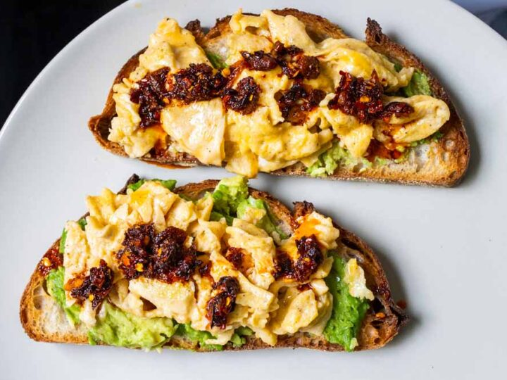

Chili Egg on Toast

Description
Chili oil scrambled eggs is a breakfast dish that adds a little spice to a classic staple.
It is quick to make and can most likely be made with ingredients already in your home. 2 servings.
Ingredients
- 2 Eggs
- 2 Slices of your preffered bread
- 4 Tbsp chili oil
- 1/2 Avocado
- Salt
- Optional: Butter
Steps
- Scoop out the inside of your half-avocado and smash into a spreadable paste
- Crack open an egg into a small bowl and whisk till scrambled. Add about 5 dashes of salt.
- Heat a pan on high heat then add 2 tbsp of chili oil.
- Once the chili oil is bubbling, add your egg. Then turn off your heat. The residual heat will cook the egg.
- Heat a seperate pan to medium heat to toast your bread. Add about 1/2 a tbsp of butter if you desire.
- Remove egg from first pan.
- Spread your avocado spread onto toast then lay egg on top.
- Repeat steps 2-7 for second egg.